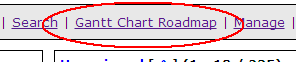
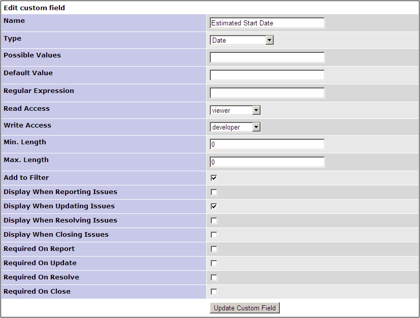

Gantt Chart Plugin for Mantis
1. Requirements
- Mantis (tested on version 1.2.5, but should work on newer versions)
- JPGraph
- PHP: memory_limit set to at least 128M in php.ini
2. Installation
- Unzip and move the GanttChart folder into the directory: mantis/plugins/
3. How the plugin works
The Gantt Chart plugin for Mantis gives the ability to display the roadmap of the tickets correction on a gantt chart, for a given version, or for given filter

The Ganttt charts can be accessed via a dedicated menu, listing all the available projects+versions

Or via a link in the filter menu, allowing more options

To work, the plugin needs
- The definition of 2 custom fields

- Or Use the bounded "Due Date" to calculate the duration

- Settings for the Duration custom field: It must be a custom field of type "String" in order to be able to use the regular expession

- Settings for the Start custom field: It must be a custom field of type "Date"
